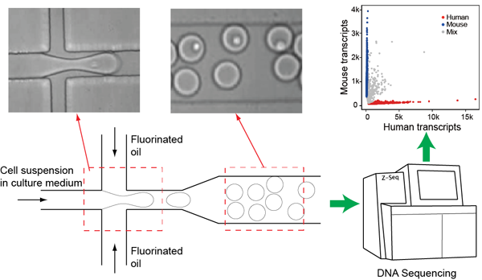
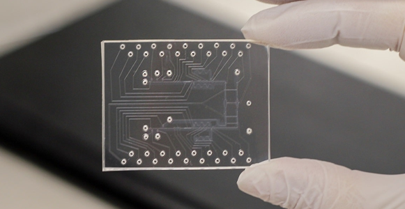

我们的研究聚焦在使用微纳米技术解决生物医学工程中的前沿问题。具体包括以下如下方向：
部分已完成或正在进行的课题如下所示。
基于液滴微流控的单细胞测序技术

传统的测序技术是基于大量的细胞样本，因此测序结果为大量细胞的平均值，而无法揭示细胞个体之间的诧异。检测细胞间的异质性对于肿瘤的个性化治疗和探究胚胎的发育至关重要。单细胞测序技术可以将单个细胞分离并编码，之后做测序和数据分析，可以得到单个细胞的基因学信息。液滴微流控在单个细胞分离中获得了越来越多的应用。我们课题组正在努力研究液滴微流控的技术细节，以提高其在单细胞测序中的效果，包括包裹效率、分离效率、编码效率等。
微流控生物检验芯片

微流控芯片像检验试纸一样，可以被用于便宜且快速的即时体外诊断。我们发挥我们在微加工和流体力学领域的特长，致力于开发可以影响日常生活的微流控医学检验芯片。 我们目前正在积极地设计这方面的课题。欢迎来自各方的合作。
力学生物学

除了生长因子之类的化学信号之外，机械信号对细胞和组织的行为也起着决定性的作用。这些机械信号包括细胞间质的硬度、空间限制、流体剪切力等。我们现在研究两个力学生物学领域的课题，一个是在组织层面上，一个在细胞层面上。
血液凝块在止血和栓塞中都扮演着重要角色。血液流动和凝块的收缩影响着凝块的形成和功能。基于这个出发点，我们致力于开发一个可在血流动力学下检测凝块收缩力的工具。这个工具如果研发成功，将有望成为一个研究凝块形成机理的平台，并且有望发现新的预防栓塞的方法。
微柱阵列（见上图）是修饰在衬底上、可用于细胞培养及其收缩力测量的装置。我们在实验室里应用这个工具研究不同细胞的力学生物学。
English | 中文